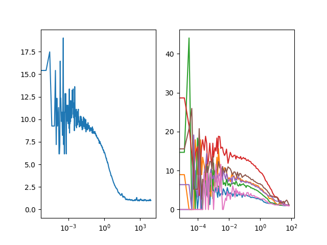

Note
Click here to download the full example code
Correlation of sliced TTTR objects¶
In some cases it can be advantages to slice the data into sub-sets and correlate the subsets individually in particular if the average intensity in the sample is not stable, e.g. when measuring in cells.
The By comparing the correlations of the subsets a filter can be defined that discriminates outlines. For details on how such a filter can be determined see [RBC+10].

import pylab as p
import tttrlib
import numpy as np
data = tttrlib.TTTR('../../test/data/bh/bh_spc132.spc', 'SPC-130')
ch1 = [0]
ch2 = [8]
correlator = tttrlib.Correlator(
n_bins=5,
n_casc=20
)
# data.header.macro_time_resolution is in nanoseconds
minimum_window_length = 10000.0 # 10.0 second
time_windows = tttrlib.ranges_by_time_window(
data.macro_times,
minimum_window_length=minimum_window_length,
macro_time_calibration=data.header.macro_time_resolution / 1e6
)
# reshape the tw array (interleaves -> start stop)
start_stop = time_windows.reshape((len(time_windows)//2, 2))
# use start stop to create new TTTR objects that are correlated
correlations = list()
for start, stop in start_stop:
indices = np.arange(start, stop, dtype=np.int64)
tttr_slice = data[indices]
tttr_ch1 = tttr_slice[tttr_slice.get_selection_by_channel(ch1)]
tttr_ch2 = tttr_slice[tttr_slice.get_selection_by_channel(ch2)]
correlator.set_tttr(
tttr_1=tttr_ch1,
tttr_2=tttr_ch2,
make_fine=False # set to True for full correlation
)
correlations.append(
(correlator.x_axis, correlator.correlation)
)
# Plot the all correlations
fig, ax = p.subplots(nrows=1, ncols=2)
# plot the unsliced correlation
correlator = tttrlib.Correlator(
tttr=data,
channels=([0], [8]), # green correlation
)
ax[0].semilogx(
correlator.x_axis,
correlator.correlation
)
# plot the individual correlations
for x, y in correlations:
ax[1].semilogx(x, y)
p.show()
Total running time of the script: ( 0 minutes 0.337 seconds)